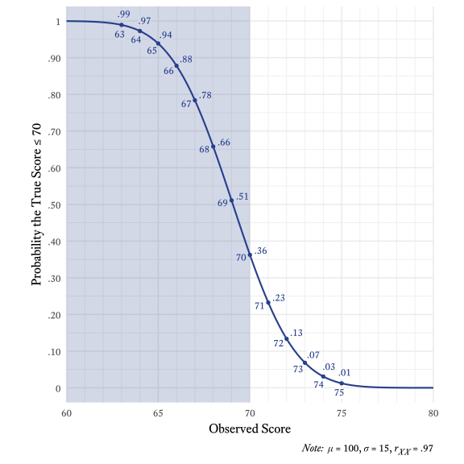
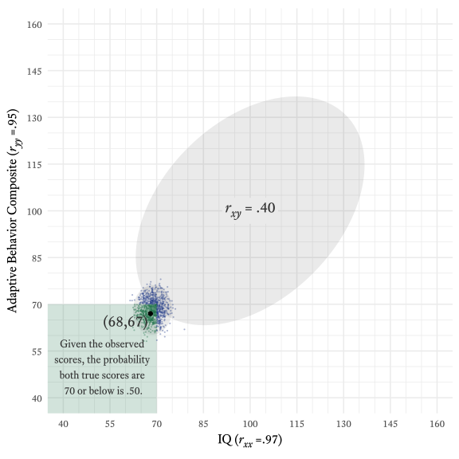

16 Unfinished Odds and Ends
16.1 Thresholds
The traditional threshold for diagnosing intellectual disability is 70. If a person’s observed IQ \left(r_{XX}=.97\right) is 68, what is the probability that the person’s true score is 70 or less?
More generally, given an observed score X with reliability coefficient r_{XX}, what is the probability that the associated true score T is less than or equal to threshold \tau?
When we predict the true score T with a specific value of X, the estimated true score \hat{T} is:
\hat{T}=r_{XX}\left(X-\mu_X\right)+\mu_X
The standard error of the estimate \sigma_{T-\hat{T}} in this prediction is:
\sigma_{T-\hat{T}}=\sigma_X\sqrt{r_{XX}-r_{XX}^2}
If we have reason to assume that the prediction errors are normally distributed, the probability that the true score T is less than or equal to threshold \tau can be calculated using the standard normal cumulative distribution function \Phi like so:
P(T\le\tau)=\Phi\left(\frac{\tau-\hat{T}}{\sigma_{T-\hat{T}}}\right)
Using this formula, we can see that our hypothetical person with IQ = 68, the probability that the true score is 70 or lower is about .66. Figure 16.1 shows the probabilities for all values near the diagnostic threshold of 70.

As a shortcut to using the formulas displayed above
16.1.1 Multivariate Thresholds
To diagnose intellectual disability, we need a standardized measure of intellectual functioning (usually an IQ test) and well-validated measure of adaptive functioning. Suppose our two measures correlate at r = .40. The reliability coefficient of the IQ is r_{iq}=.97, and the reliability coefficient of the adaptive behavior composite is r_{ab}=.95. Both measures have a mean of \mu=100 and a standard deviation of \sigma=15.
Suppose that a person with IQ = 68 has an adaptive behavior composite of 67. What is the probability that both true scores are 70 or lower?
The vector of observed scores is:
X=\{68, 67\}
The vector of reliability coefficients:
r_{XX}=\{.97,.95\}
The correlation matrix is:
R_X=\begin{bmatrix} 1&.97\\ .97&1 \end{bmatrix}
The vector of means is:
\mu_X=\{100,100\}
The vector of standard deviations is:
\sigma_X=\{15,15\}
The observed covariance matrix is:
\Sigma_X=\sigma_X^\prime R_X\sigma_X
The true score covariance matrix is the same as the observed score covariance matrix except that the diagonal of \Sigma_X is multiplied by the vector of reliability coefficients r_{XX}:
\Sigma_T=\Sigma_X \circ \begin{bmatrix}.97&1\\1&.95\end{bmatrix}
The cross-covariances between X and T also equal \Sigma_T.
We can use equations from Eaton (2007, p. 116) to specify the conditional means and covariance matrix of the true scores, controlling for the observed scores:
\begin{align} \mu_{T\mkern 2mu\mid X}&=\mu_X+\Sigma_T\Sigma_X^{-1}\left(X-\mu_X\right)\\ \Sigma_{T\mkern 2mu\mid X}&=\Sigma_T-\Sigma_T\Sigma_X^{-1}\Sigma_T^\prime \end{align}
We can imagine that the true scores conditioned on the observed scores are multivariate normal variates:
\left(T\mid X\right)\sim\mathcal{N}\left(\mu_{T\mkern 2mu\mid X}, \Sigma_{T\mkern 2mu\mid X}\right)
We can estimate the probability that both true scores are 70 or lower using the cumulative distribution function of the multivariate normal distribution with upper bounds of 70 for both IQ true scores and adaptive behavior true scores. Under the conditions specified previously, Figure 16.2 shows that the probability that both scores are 70 or lower is about .53.

17 Multivariate Thresholds and True Scores
r_xx <- .96
v_name <- c("IQ", "IQ_true")
threshold <- 70
sigma <- matrix(c(1,rep(r_xx,3)), nrow = 2, dimnames = list(v_name,v_name)) * 15^2
mu <- c(IQ = 100, IQ_true = 100)
p <- tibble(lower = list(c(IQ = -Inf, IQ_true = -Inf),
c(IQ = -Inf, IQ_true = threshold),
c(IQ = threshold, IQ_true = -Inf),
c(IQ = threshold, IQ_true = threshold),
c(IQ = -Inf, IQ_true = -Inf),
c(IQ = threshold, IQ_true = -Inf),
c(IQ = -Inf, IQ_true = -Inf),
c(IQ = -Inf, IQ_true = threshold)),
upper = list(c(IQ = threshold, IQ_true = threshold),
c(IQ = threshold, IQ_true = Inf),
c(IQ = Inf, IQ_true = threshold),
c(IQ = Inf, IQ_true = Inf),
c(IQ = threshold, IQ_true = Inf),
c(IQ = Inf, IQ_true = Inf),
c(IQ = Inf, IQ_true = threshold),
c(IQ = Inf, IQ_true = Inf)),
outcome = c("TP", "FP", "FN", "TN", "P", "N", "D+", "D-"),
p = pmap_dbl(list(lower = lower, upper = upper), \(lower, upper) mvtnorm::pmvnorm(lower, upper, mean = mu, sigma = sigma) |> as.vector())) |>
select(outcome,p) |>
deframe()
p TP FP FN TN P N
0.017460927 0.005289205 0.003152489 0.974097379 0.022750132 0.977249868
D+ D-
0.020613417 0.979386583 tibble(Statistic = c("Sensitivity",
"Specificity",
"PPV",
"NPV",
"Overall Accuracy",
"Prevalence",
"Selection Ratio",
"Positive Likelihood Ratio",
"Negative Likelihood Ratio",
"True Positive Rate",
"False Positive Rate",
"True Negative Rate",
"False Negative Rate"),
Value = c(p["TP"] / p["D+"],
p["TN"] / p["D-"],
p["TP"] / p["P"],
p["TN"] / p["N"],
p["TP"] + p["TN"],
p["D+"],
p["P"],
(p["TP"] / p["D+"]) / (p["FP"] / p["D-"]),
(p["FN"] / p["D+"]) / (p["TN"] / p["D-"]),
p["TP"],
p["FP"],
p["TN"],
p["FN"]
)) # A tibble: 13 × 2
Statistic Value
<chr> <dbl>
1 Sensitivity 0.847
2 Specificity 0.995
3 PPV 0.768
4 NPV 0.997
5 Overall Accuracy 0.992
6 Prevalence 0.0206
7 Selection Ratio 0.0228
8 Positive Likelihood Ratio 157.
9 Negative Likelihood Ratio 0.154
10 True Positive Rate 0.0175
11 False Positive Rate 0.00529
12 True Negative Rate 0.974
13 False Negative Rate 0.00315tibble(statistic = c("Sensitivity",
"Specificity",
"PPV",
"NPV"),
lowerx = list(c(IQ = -Inf, IQ_true = -Inf),
c(IQ = threshold, IQ_true = -Inf),
c(IQ = -Inf, IQ_true = -Inf),
c(IQ = -Inf, IQ_true = threshold)),
upperx = list(c(IQ = threshold, IQ_true = Inf),
c(IQ = Inf, IQ_true = Inf),
c(IQ = Inf, IQ_true = threshold),
c(IQ = Inf, IQ_true = Inf)),
lower = list(c(IQ = -Inf, IQ_true = -Inf),
c(IQ = -Inf, IQ_true = threshold),
c(IQ = -Inf, IQ_true = -Inf),
c(IQ = threshold, IQ_true = -Inf)),
upper = list(c(IQ = Inf, IQ_true = threshold),
c(IQ = Inf, IQ_true = Inf),
c(IQ = threshold, IQ_true = Inf),
c(IQ = Inf, IQ_true = Inf)),
value = pmap_dbl(list(lowerx = lowerx,
upperx = upperx,
lower = lower,
upper = upper), tmvtnorm::ptmvnorm,
mean = mu,
sigma = sigma)) |>
select(statistic, value)# A tibble: 4 × 2
statistic value
<chr> <dbl>
1 Sensitivity 0.847
2 Specificity 0.995
3 PPV 0.768
4 NPV 0.997list(
list(
statistic = "Sensitivity",
lowerx = c(IQ = -Inf, IQ_true = -Inf),
upperx = c(IQ = threshold, IQ_true = Inf),
lower = c(IQ = -Inf, IQ_true = -Inf),
upper = c(IQ = Inf, IQ_true = threshold)
),
list(
statistic = "Specificity",
lowerx = c(IQ = threshold, IQ_true = -Inf),
upperx = c(IQ = Inf, IQ_true = Inf),
lower = c(IQ = -Inf, IQ_true = threshold),
upper = c(IQ = Inf, IQ_true = Inf)
),
list(
statistic = "PPV",
lowerx = c(IQ = -Inf, IQ_true = -Inf),
upperx = c(IQ = Inf, IQ_true = threshold),
lower = c(IQ = -Inf, IQ_true = -Inf),
upper = c(IQ = threshold, IQ_true = Inf)
),
list(
statistic = "NPV",
lowerx = c(IQ = -Inf, IQ_true = threshold),
upperx = c(IQ = Inf, IQ_true = Inf),
lower = c(IQ = threshold, IQ_true = -Inf),
upper = c(IQ = Inf, IQ_true = Inf)
),
list(
statistic = "True Positives",
lowerx = c(IQ = -Inf, IQ_true = -Inf),
upperx = c(IQ = threshold, IQ_true = threshold),
lower = c(IQ = -Inf, IQ_true = -Inf),
upper = c(IQ = Inf, IQ_true = Inf)
),
list(
statistic = "False Positives",
lowerx = c(IQ = -Inf, IQ_true = threshold),
upperx = c(IQ = threshold, IQ_true = Inf),
lower = c(IQ = -Inf, IQ_true = -Inf),
upper = c(IQ = Inf, IQ_true = Inf)
),
list(
statistic = "True Negatives",
lowerx = c(IQ = threshold, IQ_true = threshold),
upperx = c(IQ = Inf, IQ_true = Inf),
lower = c(IQ = -Inf, IQ_true = -Inf),
upper = c(IQ = Inf, IQ_true = Inf)
),
list(
statistic = "False Negatives",
lowerx = c(IQ = threshold, IQ_true = -Inf),
upperx = c(IQ = Inf, IQ_true = threshold),
lower = c(IQ = -Inf, IQ_true = -Inf),
upper = c(IQ = Inf, IQ_true = Inf)
)
) |>
map(\(l) {
tmvtnorm::ptmvnorm(
lowerx = l$lowerx,
upperx = l$upperx,
lower = l$lower,
upper = l$upper,
mean = mu,
sigma = sigma
) |>
as.vector() |>
`names<-`(l$statistic)
}) |>
unlist() |>
enframe()# A tibble: 8 × 2
name value
<chr> <dbl>
1 Sensitivity 0.847
2 Specificity 0.995
3 PPV 0.768
4 NPV 0.997
5 True Positives 0.0175
6 False Positives 0.00529
7 True Negatives 0.974
8 False Negatives 0.0031517.1 Structure
Exploratory factor analysis
Confirmatory factor analysis
Structural equation modeling
17.2 Validity
Face validity
Content validity
Criterion-oriented validity
- Concurrent validity
- Predictive validity
Discriminant validity
Convergent validity
Incremental validity
Construct validity
17.3 Profiles
Difference scores
Outliers
Highest-lowest scores
Multivariate profile shape
Conditional profiles